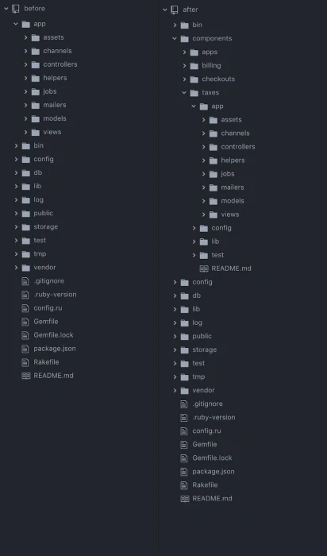

在今年的国外的黑色星期五(类似国内的双十一购物季)， Shopify公司取得了亮眼的成绩，他们的工程团队给出了以下的技术的数据：
- MySQL: 1400万/秒 QPS (峰值)
- Metrics: 200亿的指标/分钟，27G/秒指标数据
- 服务峰值：127万/秒 服务调用,7598万次/每分钟
- 320亿个异步服务
- 240亿个webhhok
- Kafka: 2000万条消息/秒
Shopify 是加拿大的一家跨国电子商务公司，总部位于安大略省渥太华，Shopify也是该公司所有的电子商务平台的名称。Shopify为在线零售商提供一整套服务“包括支付、市场营销、运输和客户契合工具，以简化小型商户开设在线商店的过程”。Shopify成立于2004年，公司的三位创始人原计划开设一家经营滑雪设备的在线商店（Snowdevil），由于对市场上的电子商务产品不够满意，创始人之一的程序员吕特克决定开发一套自己的程序。吕特克使用开源框架Ruby on Rails进行开发，2006年6月Shopify平台上线。2015 年 Shopify 在纽约与多伦多两地证券交易所上市。
有些人总是会问大厂为什么主要使用某些语言？比如腾讯百度偏爱C/C++、阿里喜欢Java、字节钟情Go,一些公司使用Python等等。其实很多情况下并没有太多的道理，公司初始的时候时候就是要活下来，使用最熟悉的编程语言快速生成出原型产品，得到市场的认可快速扩大的过程中一般还是会基于最基础的语言和平台，中间发展中重新设计和推到重来的情况非常少，至多也就是公司在迅速扩大的过程中有些团队会引入其他编程语言，但是主编程语言和平台还是有初创时期抉择结果的影子。
回到主题，我们看到Shopify公布的今年黑色星期五的计数中有一条：
服务峰值：127万/秒 服务调用,7598万次/每分钟
也许你不知道的是，Shopify 和stackoverflow一样，并不是一个微服务的发烧友，他们的商务平台是一个单体程序，所有的商务平台代码都在一个仓库中。
难道一个单体程序就能达到每秒百万的服务，尤其是复杂的电子商务业务？
这里是很多人误区，尤其当今单体架构貌似都被标记成“坏”的标签。单体程序在有些场景下还是有市场的，尤其是Shopify这样业务，他们实现了模块化的单体程序，实际并不是一台服务器一个应用程序的方式部署，而是可以部署成百个单体程序，通过分片等方式也可以做到规模横向扩展。
当然我整理这篇文章也不是鼓吹单体架构，而且我觉得他们采用单体架构有历史的背景，通过模块化组织，组件式的开发也满足他们当前的规模和业务方向。但是一旦规模持续扩大，并且公司进行多元化的经营，还是会遇到规模等各种问题，就像他们前几年遇到的情况一样，他们通过一年多的治理，摸索出解决单体架构的困境，将来有一天，他们还是要继续治理。
那么本文通过他们工程团队分享的资料，看看它们的经验。
单体程序 vs 微服务
依照维基百科上的定义，单体(monolith)程序的各种功能都是交织在一起的，而不是架构上独立的组件。对于Shopify单体来说，处理运费计算的代码与处理结账的代码共存，几乎没有什么可以阻止它们相互调用。随着时间的推移，这导致了处理不同业务流程的代码之间的高度耦合。
单体程序的优缺点
优点：
- 容易实现，没有复杂的架构，尤其对于Shopify使用的 RoR (Ruby on Rails)，所有代码都在一个库这，引用方便。
- 就一个代码库，管理和发布很容易。在代码库中可以搜索到所有代码和函数。测试和发布流水线就一套。数据存储到一套可以共享的数据库中，数据库的跨表查询也方便。
- 因为单体程序的功能都作为一个整体都发布到一个地方，部署架构也简单，就一套环境标准就可以了。数据库、web服务、后台任务、Redis、Kafka、ES等等就一套。
- 因为是单体，你可以直接调用其它的组件，而不是通过rpc或者web service api去访问其它的服务
缺点：
随着规模的扩大，单体程序也面临的不可控的问题，Shopify在2016年也遇到了问题。
- 应用程序变得脆弱了，新的代码带来了意想不到的影响,看似无害的更改可能会引发一连串不相关的测试失败。
- 代码的紧耦合和缺乏边界，导致测试难以编写，并且在CI上运行缓慢
- 即使做一个简单改变的开发，也得需要了解复杂的上下文，尤其对于新员工=来说，两眼黑。复杂的单体应用程序会导致陡峭的学习曲线。
Shopify工程师认为，他们遇到的所有问题都是由于代码中不同功能之间缺乏界限的直接结果。他们要做的工作是减少不同业务领域之间的耦合，但问题是如何去做？
当然这里我认为还有部分业务领域可能需要大规模的扩展，但有些业务不需要，那么如果进行部分业务扩展？某个业务需要升级或者降级，需要单体程序整体升降机？如果一个业务有问题导致程序异常，异常所有的业务？所有这些，Shopify的工程师并没有回答，或者说，这对于他们来说不是最重要的问题。
为啥不使用微服务？
Shopify工程师也考察了微服务架构。微服务架构是一种应用程序开发方法，其中大型应用程序构建为一组独立部署的较小服务。他们认为虽然微服务可以解决他们遇到的问题，但它们会带来另一套问题。
改造成微服务，他们必须维护不同的测试和部署流水线，并且需要为每个微服务增加基础设施的开销。每个微服务都是独立部署的，他们之间的访问需要跨网络，带来了延迟，并且降低开了可用性。并且跨多个服务的大型重构可能很繁琐，需要更改所有依赖服务并协调部署。
总结一下，他们的担忧是:
- 测试和运维复杂
- 需要更多的部署成本
- 微服务带来网络延迟和可用性降低
- 现在全改成微服务很麻烦了
第1，2条可能不是问题。作为一个上市公司，这个成本应该还不算问题。第三条是微服务必然带来的问题，在架构抉择的会做权衡。第四条属于骑虎难下的情况，我的架构已经这样了，让我推到重来，对于一个上市公司服务了那么多的客户，这个架构的全改变确实风险太高了。另外这里他们并没有考虑未来的业务发展带来的更大规模的影响，以及新的业务带来的需求。
为了降低第四条的影响，其实是可以逐步的应用微服务，比如把结账服务抽取成微服务，逐步演进。但是Shopify工程师没有这么做，而是从单体程序的模块化入手去解决。
模块化单体程序
他们想要一个在不增加部署单元数量的情况下提高模块化的解决方案，使我们能够获得单体和微服务的优势，而没有太多缺点。这不就是鱼与熊掌都想兼得嘛，有这种好事？
模块化单体是一个系统，其中所有代码都服务于单个应用程序，并且不同业务域之间存在严格强制执行的边界。
Shopify实现模块化单体的方式是组件化(Componentization)，2017年初他们成立了一个精干的小组专门去解决这个问题。
他们重新组织了他们的代码结构：

可以看到，它们把一个单体程序按照业务分成了多个组件，每个组件都是一个单独的小的RoR程序，最终组件作为ruby模块，它们之间不再耦合。
进一步的解耦业务域，它们之间定义清晰的边界接口，域边界通过公共API标识，并对关联数据拥有独占所有权。他们分析组件之间的调用，并且专门做了一个跟踪系统进行分析和推进。
可以说，Shopify的工程师从模块化单体程序方向上做了很多工作。
其实感觉他们这样做，正在朝着微服务架构方式做演进，当然他们将来也未必改造成微服务，不过和微服务的演进方式很类似，首先进行了业务域的划分和边界的整改，程序还是一个单体程序。
Shopify 数据单体
Shopify数据库的架构也非常有意思。他们也应对大量的数据库访问，就像今年黑五的指标一样，1400万/秒 QPS的峰值。如果应对呢？
最初他们采用分片的方式能够水平扩展数据库并继续增长。
|
|
但是失去了性能和可扩展性。如果我们的任何分片出现故障，整个操作将无法在整个平台上使用。2016年，我们坐下来重组Shopify的运行时架构。他们意识到仅仅对数据库进行分片是不够的，需要完全隔离每个分片，这样故障就不会演变成平台中断。他们引入了 pod（不要与 Kubernetes pods 混淆）来解决这个问题。容器由一组商店组成，这些商店位于一组完全隔离的数据存储上。每个工作单元（Web 请求和延迟作业）分配给单个 Pod。这意味着，处理请求只需要一个 Pod 联机。
Shopify为每个 Pod 分配了一对数据中心，在任何时候，其中一个将成为活动数据中心，而第二个充当恢复站点,也就是master-standby的方式容灾。他们还开发了一种名为 Pod Mover 的工具，允许我们在一分钟内将 Pod 移动到其恢复数据中心，而不会丢弃请求或作业。
如果能把业务分解成这样，还怕什么规模扩展呢？有规模的需求就扩展POD就好了，而且POD之间有隔离，每个POD就是一个单体。
总体上看， Shopify采用务实的方式，结合自己公司的历史架构、开发特点，摸索出一套行之有效的手段，在今年的黑五中很好的应对了流量洪峰。
参考资料
- https://www.reddit.com/r/programming/comments/z90juf/shopify_monolith_served_127_million_requests_per/
- https://shopify.engineering/shopify-monolith
- https://shopify.engineering/deconstructing-monolith-designing-software-maximizes-developer-productivity
- https://shopify.engineering/a-pods-architecture-to-allow-shopify-to-scale
- https://stackshare.io/kirs/decisions